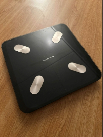
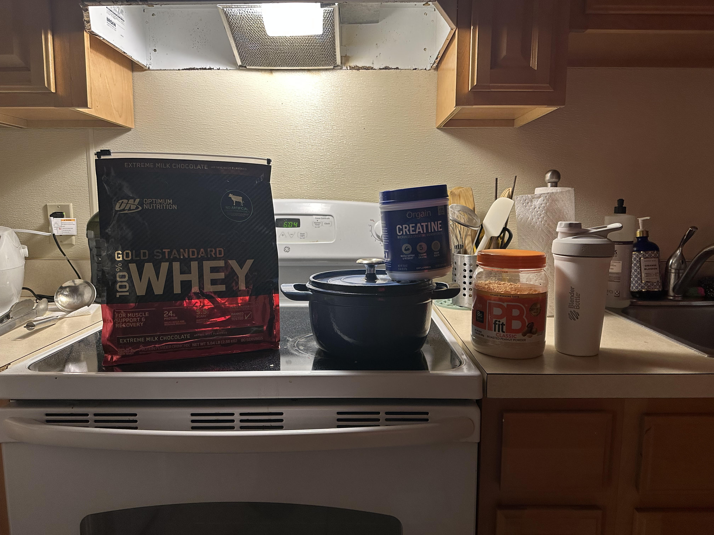
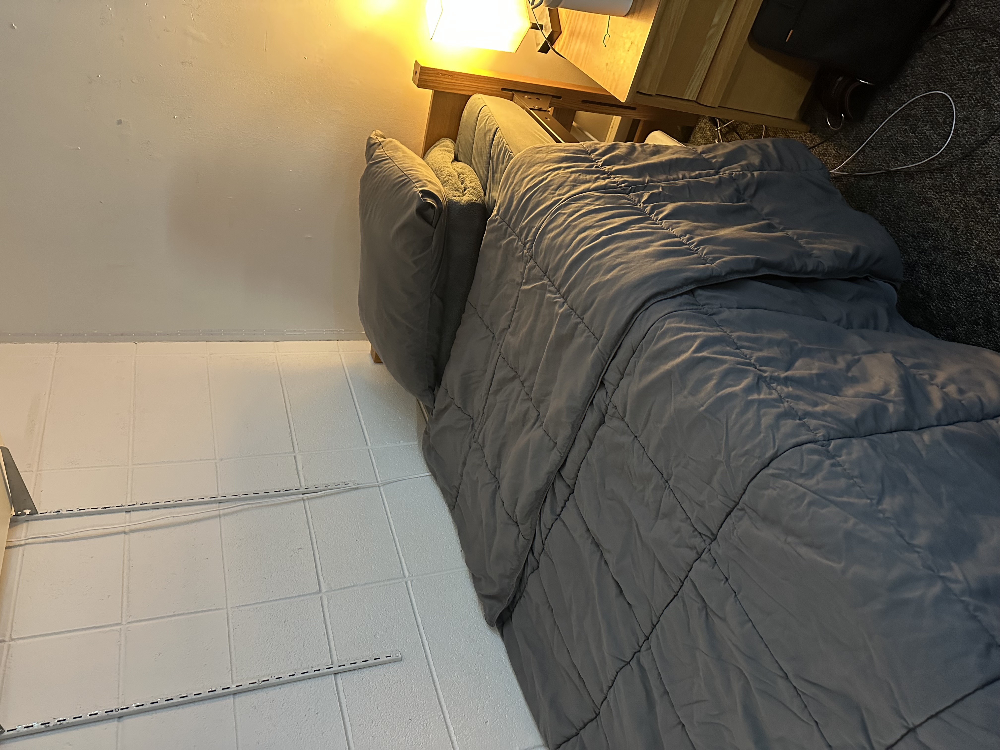

Gear Reviews
Detailed, honest reviews of the cookware and tracking tools I use every single day. Learn what's worth the investment and what to skip when building your weight-loss kitchen.
Read the ReviewsReal tools, real food, real results — no shortcuts, no guesswork.
Welcome to Matt's Weight Loss — a personal guide to sustainable fat loss built on three pillars: smart eating, consistent exercise, and quality sleep. This site documents the gear, recipes, and strategies that have worked in the real world, not just in theory.
Browse in-depth reviews of the exact kitchen tools and fitness equipment used every day, explore the full inventory of items that keep the journey on track, or dive into the interactive body systems map to understand the biology behind the results. Whether you are just starting out or looking to sharpen your approach, there is something here for every stage of the journey.

Detailed, honest reviews of the cookware and tracking tools I use every single day. Learn what's worth the investment and what to skip when building your weight-loss kitchen.
Read the Reviews
A curated gallery of every item across eating, working out, and sleeping — the complete ecosystem that makes consistent weight loss possible. Includes item tables with ages and use-cases.
Browse the Inventory
An interactive map of the body systems involved in weight loss — from the brain's hunger hormones to the pancreas's insulin response. Tap any system to learn its role.
Explore the Map